一、安装步骤
1.下载node.js
官网网选择windows版本的下载即可：https://nodejs.cn/download
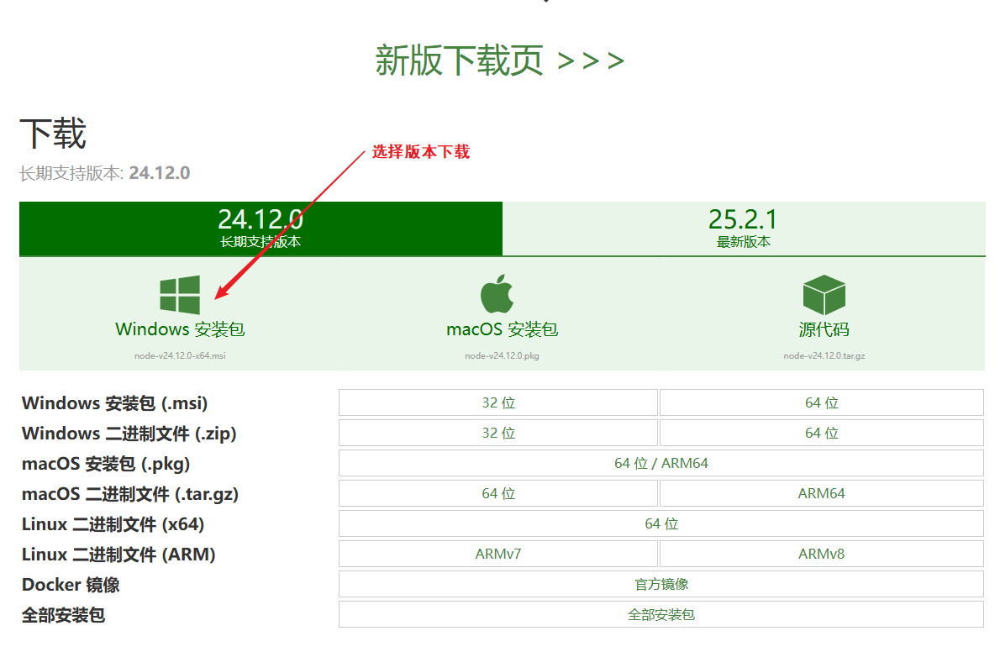
2.安装node.js

3.验证安装
WIN+R打开CMD管理员运行–>输入node -v , npm -v

4,设置淘宝镜像源
由于网段原因，设置镜像源可以更快的访问hexo博客
输入命令行：
1 | npm install -g cnpm --registry=https://registry.npm.taobao.org 【MAC版本或Linux版本适用】 |
Windows版本：
1 | npm install -g cnpm --registry=https://registry.npmmirror.com |
安装完成验证输入：cnpm(回车)

输入：
1 | cnpm -v 【查看版本】 |

5.安装hexo
输入命令：
1 | cnpm install -g hexo-cli |
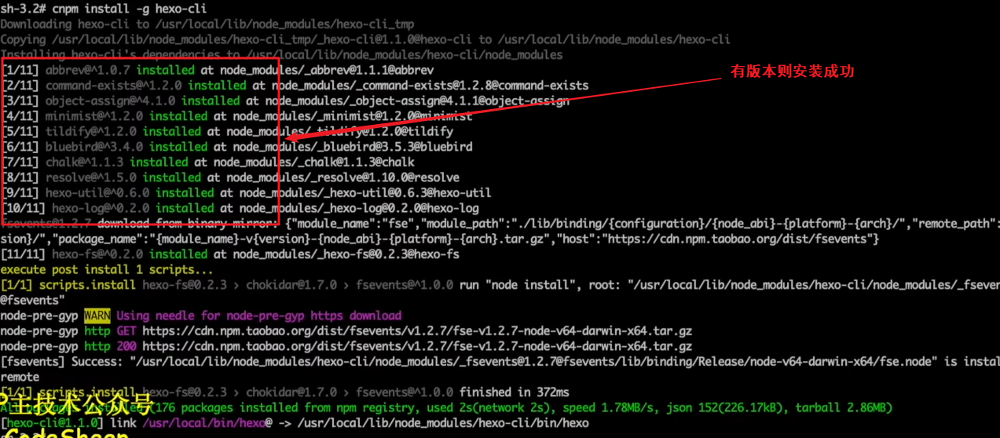
验证安装：
1 | hexo -v |

二、使用hexo
1.建立一个空的blog文件夹
1 | CMD命令创建文件夹： |
2.初始化博客
进入blog目录下
CMD输入命令
1 | hexo init #CMD |

查看是否生成内容
1 | dir |
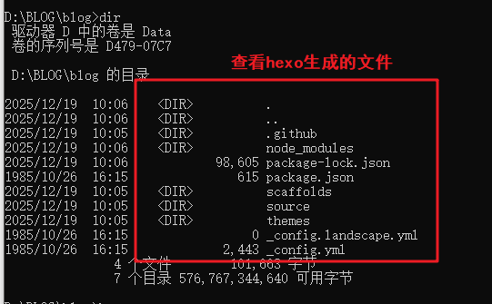
3.启动hexo
输入命令：
1 | hexo s |
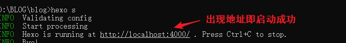
4.创建一篇文章
确保在blog目录下
输入命令：
1 | hexo n "博客文章标题" |
文章路径默认为：blog/source/_posts/博客文章标题.md
打开文件可以使用VScode或者直接使用markdown打开编辑即可
5.保存编辑好的文章
①退出server
②在blog目录下输入命令：
1 | hexo clean #清理hexo |
6.遇到生成错误问题如何解决

一般生成错误是因为语法格式问题出错
填写时务必注意：
- 每个冒号
:后面必须紧跟一个空格。 tags和categories下的列表项（如- 标签1）必须用2个空格缩进。- 确保所有中英文标点符号为英文状态（尤其是冒号和空格）。

正确格式为：

7.图片无法显示问题
7.1启用资源文件夹功能
打开博客根目录下的 _config.yml 文件，找到 post_asset_folder 选项，将其值改为 true。
1 | post_asset_folder: true |
7.2为文章创建资源文件夹
保存配置后，以后当你使用 hexo new "文章标题" 命令创建新文章时，Hexo会自动在 source/_posts 下生成一个 文章标题.md 文件和一个同名的文件夹（例如 文章标题/）。你可以把该文章用到的图片都放进这个文件夹。
（对于已经存在的旧文章，你需要手动在 source/_posts 下创建一个与 .md 文件同名的文件夹。）
7.3在文章中引用图片
假设你的文章是 /.md，那么资源文件夹就是 ``。你把图片（比如 setup.png）放进去后，在Markdown中使用以下语法引用：
1 |  |
注意： 这里直接写文件名，不要加 `` 或任何绝对路径。
7.4修改完成后重启hexo
顺序：清理–生成–启动服务
1 | hexo clean |
7.5倘若还是无法显示图片
输入命令下载图片依赖插件：
1 | npm install hexo-asset-image --save |
这个插件会自动将你在Markdown中写的图片相对路径，转换为部署后的正确绝对路径。
7.6要是还是无法显示图片
可能是主题兼容问题导致的
更换一个新的主题试试
7.7解决路径问题
安装hexo-asset-image后路径中会自动生成别的路径
解决方法：
卸载hexo-asset-image
1 | npm uninstall hexo-asset-image |
下载其他的图片插件
1 | npm install hexo-renderer-marked --save |
修改配置文件_config.yml：
1 | #主动添加root： |
图片依旧放置在同名文件夹中
markdown中图片路径为：
[图片描述] (同名文件夹名称/图片名称)
总结：
倘若是默认主题（landscape）需将markdown图片路径设置为public下的日期文件夹下的图片路径，如：’2025/12/19/博客文件（md）名称
倘若是其他主题，可能路径为相对路径，不需要加任何的路径指示，如hexo-theme-Chic主题，只需将markdown文件中的路径设置为相对路径即可，即图片名称
三、在GitHub上部署hexo
1.打开并登录GitHub
新建仓库
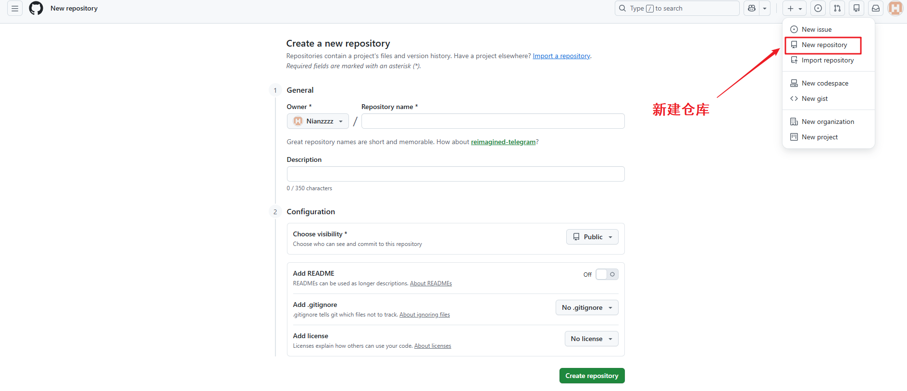
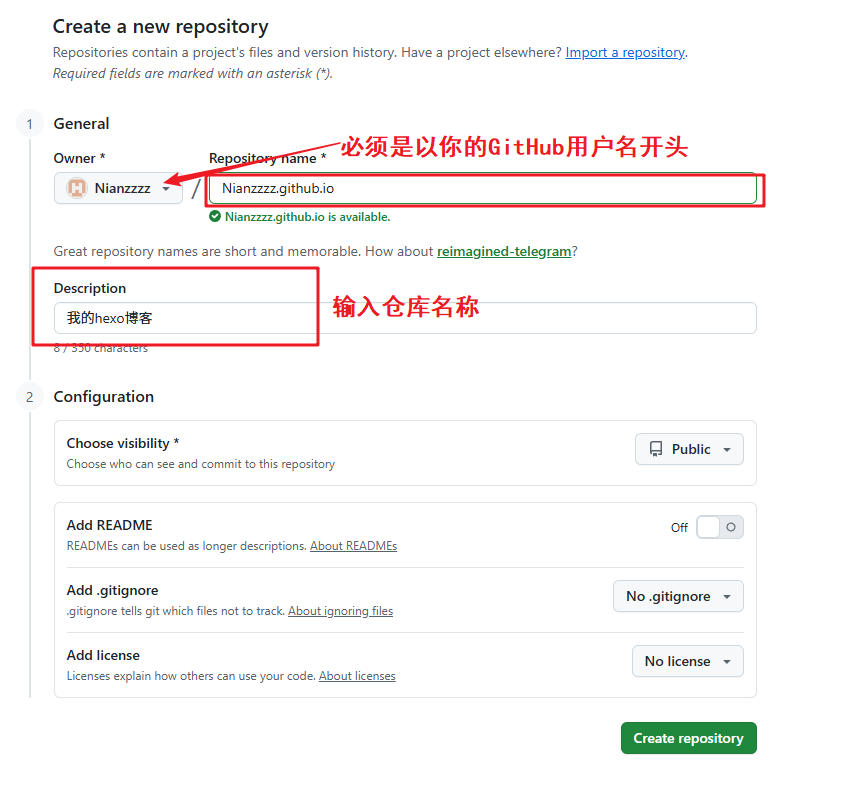

2.回到命令行下载git包
blog目录下输入：
1 | cnpm install hexo-deployer-git --save |
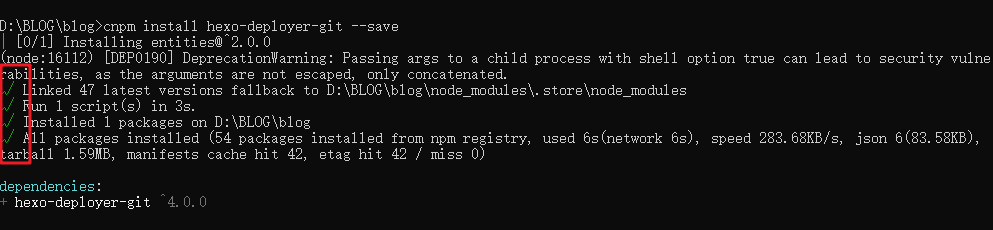
3.配置_config.yml文件
_config.yml文件在blog目录下可见
3.1打开并修改如下：
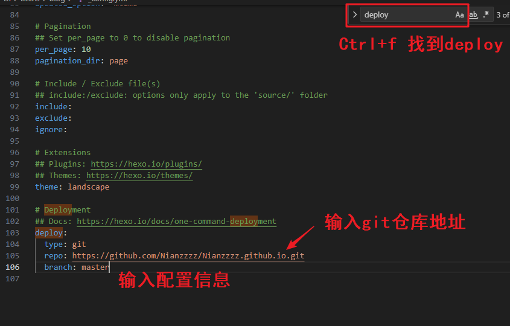
1 | deploy: |
配置完成后保存
3.2继续回到命令行将hexo部署到远端：
输入命令：
1 | hexo d |
部署失败将地址修改为SSH地址：


安装失败请确保电脑已安装Git，否则需安装并配置其环境变量
部署成功返回：
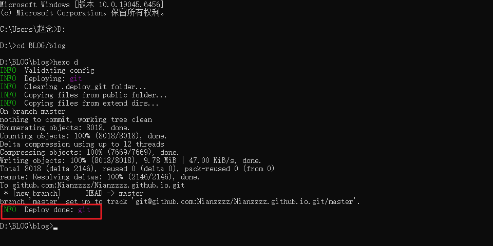
部署失败原因：
GitHub SSH 密钥对配置一下即可
3.2.1配置密钥方法：
打开git的bash（桌面右键打开）
1 | cd ~/.ssh #查看.ssh文件夹是否存在，里面是否有文件 |

假如显示文件不存在
安装以下命令生成密钥：
1 | ssh-keygen -t rsa -C "xxx@xxx.com" // 将 "xxx@xxx.com" 替换为你自己GitHub的邮箱地址 |
执行成功后出现：
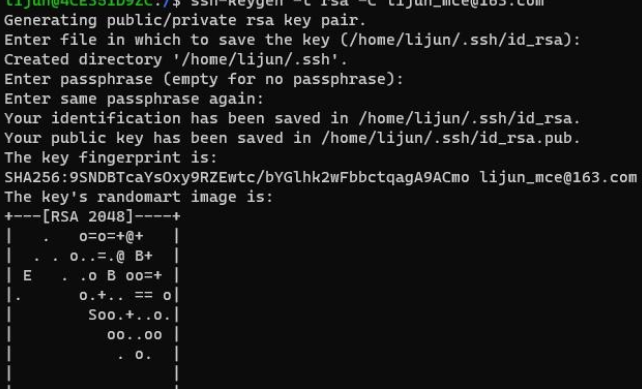
也可以手动查看文件夹中是否生成rsa密钥
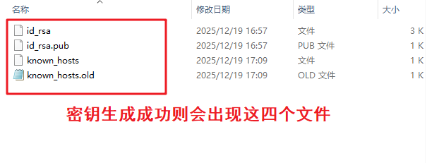

将复制的内容粘贴到Github的ssh密钥配置窗口中：点击setting


检查是否配置成功：
1 | ssh -T git@github.com |
如果没有成功，可能是出现了中文路径
可以尝试修改 SSH 配置文件的默认路径：
修改用户环境变量：
1 | export HOME=/C/Users/your-username |
手动创建.ssh文件夹：
1 | mkdir -p /C/Users/your-username/.ssh |
设置正确的权限：
1 | chmod 700 /C/Users/your-username/.ssh |
再重复一遍密钥生成，然后复制密钥、配置密钥、检查密钥是否连接成功！